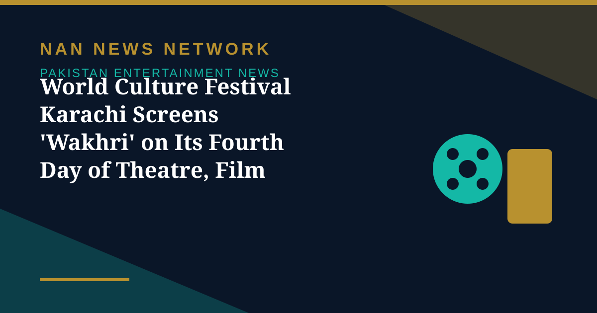

World Culture Festival Karachi Screens 'Wakhri' on Its Fourth Day of Theatre, Film and Music

The 3rd World Culture Festival Karachi 2026 reached its fourth day with a dynamic array of international masterclasses, film screenings, theatrical productions and global music and dance showcases at the Arts Council of Pakistan, Karachi, Business Cafe reported.
The 'Wakhri' screening
The festival hosted a well-attended screening of the acclaimed Pakistani feature film 'Wakhri', followed by an interactive Q&A session featuring director Eram Parveen Bilal via video link alongside producer Abid Merchant, who engaged with the audience on the film's production and thematic scope. Uruguayan theatre troupe Grieta Teatro also presented 'Chicha', a 45-minute solo physical theatre and clowning performance by artist Betina Andarina, exploring memory and human emotion.
The festival at a glance
The 25-day World Culture Festival Karachi brings together over 1,000 international artists from 150-plus countries alongside 500 Pakistani performers, with daily programming across theatre, music, dance and visual arts. The festival runs through November 22 at the Arts Council of Pakistan, Karachi, with public access available via complimentary registration.
Sources: Business Cafe, EIN Presswire, November 2-3, 2026
More on Pakistan Entertainment News
- Pakistan and Saudi Arabia Agree to Expand TV, Entertainment and Digital Media Ties
- PTV to Revive Drama and Film Academy With Pakistan's First Local Colour Grading Training
- Ali Zafar's Bostan Khan Look for 'Gangs of Khorasan' Leaves Fans Curious
- 'Hum Bhi Jee Lain' Takes On Parental Expectations Pushing Children Into Unwanted Careers
- Sheheryar Munawar Announces New 'Dar-e-Nijaat' OST After Fans Kept Asking for It
- 'Ghost School' Opens in Pakistani Cinemas After a Long Censor Battle in Sindh
- Faysal Quraishi and Hareem Farooq Decry Alleged 'Smear Campaign' Against 'Mango Jutt'
- World Culture Festival 2026 Opens in Karachi With 150 Countries Taking Part
- Punjab Plans Stricter Laws for Theatre and Stage Dramas, Replacing 1876 Act
- Faran Tahir Returns to Marvel as Raza in Vision Quest After 18 Years
- Ramayana Buzz Reaches Karachi as Fans Display Film Poster at Temple
- Humayun Saeed Calls for Pakistan's Own OTT Platform to Take Dramas Global
- Dananeer Mubeen Teases 'Bullet Speed' Twists Ahead in 'Hurmat'
- 'Ghost School' Opens in Pakistan Cinemas on October 30 After Censor Court Fight
- Pakistani Dramas to Watch in October 2026: 'Mitti De Baway' Leads the Month
- Pakistani Film 'Wakhri' Selected for UK's South Asian Film Season
- World Theatre Comes to Lahore as Punjab MAAS Festival Runs to October 28
- 'Mango Jutt' Punjabi Action-Comedy Hits Cinemas
- Dar-e-Nijaat Tops 2026 TV Ratings at 16.3 TRP
- Ali Zafar to Make His Pakistani TV Drama Debut in a New Crime Series